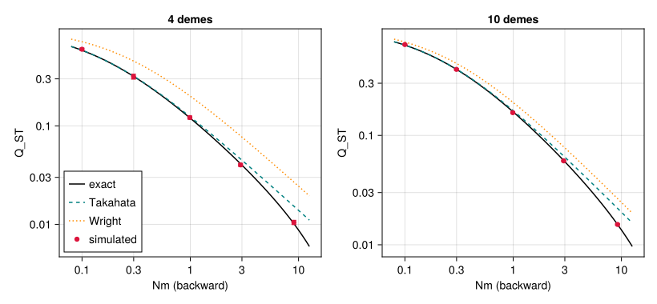
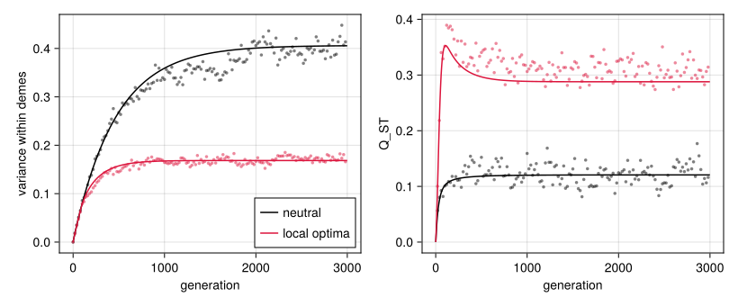

Metapopulations and migration
Simon Frost
- Overview
- Setup
- Building a metapopulation
- How migration works
- Neutral differentiation
- Local adaptation
- What the moments lowering predicts
- Summary
- Where next
Overview
QTSim follows one population. The categorical layer of QTLSim places populations side by side as demes, with the monoidal product ⊗ of the life cycle, and couples them with a migration step, migrate(k) (One life cycle, two backends). This vignette shows how to build and run such metapopulations, explains what the kernel’s migration does, and checks the simulated differentiation among neutral demes against population-genetic theory: Wright’s island model (Wright 1931), its exact finite-island form (Takahata 1983), the stepping-stone ring (Kimura and Weiss 1964; Slatkin 1991), and the neutral theory of quantitative variation in a subdivided population (Lande 1992; Whitlock 1999). It ends with demes adapted to optima of their own, whose differentiation in the trait exceeds the neutral expectation.
Setup
using QTLSim
import Catlab # loads the categorical layer
using Catlab: ⋅, ⊗
using CairoMakie, Printf, Random, Statistics
using Distributions: Normal, cdf
CairoMakie.activate!(type = "png")
L = lifecycle(); g = L.generation # QTSim's generation, Zygotes → Zygotesdevelop⋅select⋅reproduce⋅record⋅rescale⋅mutate⋅swap: Zygotes → ZygotesBuilding a metapopulation
A metapopulation needs two things: populations, one per deme, and a life cycle on all of them. p ⊗ demes(k) makes k demes with the parameters p. The life cycle g ⊗ g ⊗ g ⊗ g runs QTSim’s generation in each of four demes, and composing it with L.migrate(4) adds a migration step after the generation:
p = Params(PopSize = 200, NoQTL = 10, Ploidy = 2, NoGenerations = 500, PhenotypeVar = 1.0,
Heritability = 0.5, MutationScalar = 0.01, MutationRatePerGamete = 0.01, Drift = true)
cycle = g ⊗ g ⊗ g ⊗ g ⋅ L.migrate(4)((develop⋅select⋅reproduce⋅record⋅rescale⋅mutate⋅swap)⊗(develop⋅select⋅reproduce⋅record⋅rescale⋅mutate⋅swap)⊗(develop⋅select⋅reproduce⋅record⋅rescale⋅mutate⋅swap)⊗(develop⋅select⋅reproduce⋅record⋅rescale⋅mutate⋅swap))⋅migrate: Zygotes⊗Zygotes⊗Zygotes⊗Zygotes → Zygotes⊗Zygotes⊗Zygotes⊗Zygotesrun_composed runs it. migration_rate is the probability that an individual starts an exchange with an individual of another deme, chosen at random among the other three. The records have one row per deme and generation, with the deme in the column deme. With Drift = true every individual has fitness one, so the demes drift apart, and migration holds them together:
o = run_composed(p ⊗ demes(4), Xoshiro(1); cycle, migration_rate = 0.01)
last_gen = o.gen .== 499
for d in 1:4
i = findfirst(last_gen .& (o.deme .== d))
@printf("deme %d, generation 499: mean phenotype %6.3f, genetic variance %.4f, size %d\n",
d, o.pheno_mean[i], o.geno_var[i], o.popsize[i])
enddeme 1, generation 499: mean phenotype -1.424, genetic variance 1.9559, size 200
deme 2, generation 499: mean phenotype -0.944, genetic variance 1.4993, size 200
deme 3, generation 499: mean phenotype -0.719, genetic variance 2.0551, size 200
deme 4, generation 499: mean phenotype -0.550, genetic variance 1.7720, size 200A scalar rate is the island model. For other graphs, migration_rate takes a matrix whose entry [a, b] is the probability that an individual of deme a starts an exchange with a random individual of deme b: island_migration(k, r) is the island model as a matrix, and stepping_stone(k, r) sends half of r to each neighbour on a ring (or, with circular = false, a line).
stepping_stone(6, 0.02)6×6 Matrix{Float64}:
0.0 0.01 0.0 0.0 0.0 0.01
0.01 0.0 0.01 0.0 0.0 0.0
0.0 0.01 0.0 0.01 0.0 0.0
0.0 0.0 0.01 0.0 0.01 0.0
0.0 0.0 0.0 0.01 0.0 0.01
0.01 0.0 0.0 0.0 0.01 0.0o_ring = run_composed(p ⊗ demes(6), Xoshiro(2); cycle = foldl(⊗, fill(g, 6)) ⋅ L.migrate(6),
migration_rate = stepping_stone(6, 0.02))
size(o_ring.gen)(3000,)Demes can have parameters of their own in two ways. A vector of Params, [p1, …, pk] ⊗ demes(k), gives each deme its own constants: here four demes of different sizes. Because migration exchanges individuals, each keeps its size exactly:
sizes = [50, 100, 200, 400]
o_sizes = run_composed([Params(p; PopSize = n) for n in sizes] ⊗ demes(4), Xoshiro(3); cycle,
migration_rate = 0.05)
[extrema(o_sizes.popsize[o_sizes.deme .== d]) for d in 1:4]4-element Vector{Tuple{Int64, Int64}}:
(50, 50)
(100, 100)
(200, 200)
(400, 400)Or the steps of the life cycle can carry parameters, as part of the syntax: withparams gives the steps of a deme’s generation a width ω or a fixed optimum θ of its own, and L.migrate(k; rate) carries its rate (a number or a matrix), so run_composed needs no migration_rate:
local_cycle = withparams(g; θ = -0.5) ⊗ withparams(g; θ = 0.5, ω = 0.5) ⋅ L.migrate(2; rate = 0.01)((develop⋅select(θ = -0.5)⋅reproduce⋅record⋅rescale⋅mutate⋅swap)⊗(develop⋅select(θ = 0.5, ω = 0.5)⋅reproduce⋅record⋅rescale⋅mutate⋅swap))⋅migrate(rate = 0.01): Zygotes⊗Zygotes → Zygotes⊗ZygotesThe optimum is a parameter of the step select, not of Params; the section on local adaptation below uses it.
How migration works
The kernel’s migrate! visits each individual once. With probability r it starts an exchange: it picks a deme (uniformly among the others in the island model, from its row of the matrix otherwise) and a random individual there, and the two change places. Three consequences follow.
- Deme sizes are exact. An exchange moves one individual each way, so migration never changes a deme’s size, as above.
- About twice as many individuals move as start an exchange. A deme’s individuals start about
N rexchanges, and as many individuals of the other demes start exchanges with it, so the fraction of a deme’s adults that came from elsewhere, the backward migration ratemof population genetics, is about2r.backward_migration(M, N)computes it exactly: a little less than2r, because an individual that has moved can be exchanged again. - Exchanges are made one after another, so the order of the demes could matter: with a fixed order, deme 1 would send migrants that deme 2 can pass on in the same generation, but not the reverse.
migrate!therefore visits the demes in a new uniformly random order at each call, andrandomOrderSweep_exchangeableinlean/CategoricalQuantGen/Migration.leanproves that migration is then exchangeable: relabelling the demes commutes with it, in distribution, for any migration matrix that relabelling leaves unchanged (such as the island model).
The second point can be checked directly. Tag every individual with its deme (in its environmental-deviation slot, which migrate! exchanges with it), migrate once, and count, 2000 times for each rate, in four demes of 50:
function migrant_fraction(k, N, r, ncalls, rng)
s = Params(PopSize = N, Ploidy = 2, Drift = true) ⊗ demes(k)
f = 0.0
for _ in 1:ncalls
for (a, w) in enumerate(s.demes); fill!(view(w.env, 1:w.N), a); end
migrate!(s, rng; rate = r)
f += mean(count(!=(a), view(w.env, 1:w.N)) / w.N for (a, w) in enumerate(s.demes))
end
f / ncalls
end
println("| rate r | 2r | backward m, exact | measured |\n|--:|--:|--:|--:|")
for r in (0.001, 0.01, 0.05, 0.1)
m = 1 - backward_migration(4, r, 50)[1, 1]
@printf("| %g | %g | %.5f | %.5f |\n", r, 2r, m, migrant_fraction(4, 50, r, 2000, Xoshiro(round(Int, 1e4r))))
end| rate r | 2r | backward m, exact | measured |
|---|---|---|---|
| 0.001 | 0.002 | 0.00200 | 0.00206 |
| 0.01 | 0.02 | 0.01980 | 0.02001 |
| 0.05 | 0.1 | 0.09515 | 0.09513 |
| 0.1 | 0.2 | 0.18112 | 0.18134 |
So Nm, the number of migrants per deme per generation that the classical formulas take, is $N$ times the backward rate, about $2Nr$; below, every $Nm$ is computed from backward_migration.
Neutral differentiation
The model and the statistic
Without selection (Drift = true) the trait is neutral, and its differentiation among demes is a measure of population structure. For an additive trait, $Q_{ST} = \sigma^2_B / (\sigma^2_B + 2 V_W)$, with $\sigma^2_B$ the variance among deme means and $V_W$ the additive variance within demes, has the same expectation as Wright’s $F_{ST}$ at neutral loci (Spitze 1993; Whitlock 1999). Here $\sigma^2_B$ is the variance among the deme means relative to the whole metapopulation (Wright’s convention, as in Takahata (1983) and Slatkin (1991)): $(k-1)/k$ times the variance among the $k$ deme means, less the sampling variance of a deme mean, $V_W/N$.
The demes have $N = 50$ diploids with 20 loci and a mutational variance $V_m = 0.001$ per individual per generation. The statistics are on genotypes, which the standard records do not keep for each deme, so a custom image of the step record collects them at chosen generations. QTLSim’s lowering takes images of steps from the images dictionary, so changing what is recorded changes no other step:
p0 = Params(Ploidy = 2, NoQTL = 20, RecombPoissonMean = 1.0, PhenotypeVar = 1.0, Heritability = 0.5,
MutationScalar = 0.002, MutationRatePerGamete = 0.05, Drift = true)
Vm = muteVar(p0)
"Run `ps ⊗ demes(k)`, recording each deme's mean and variance of genotypes at the census generations."
function census_run(ps, cycle, M, seed, census)
s = ps ⊗ demes(length(ps))
idx = IdDict(w => i for (i, w) in enumerate(s.demes))
mg = zeros(length(ps), length(census)); vg = zeros(length(ps), length(census))
rec = operator(:record, function (w, rng)
j = searchsortedfirst(census, w.gen)
if j <= length(census) && census[j] == w.gen
gt = view(w.genotype, 1:w.N)
mg[idx[w], j] = mean(gt); vg[idx[w], j] = var(gt)
end
w
end)
run_composed(s, Xoshiro(seed); cycle, record = false, images = Dict(:record => rec), migration_rate = M)
(; mg, vg)
end
"Q_ST from the mean within-deme variance and the mean sample variance among deme means."
qst_of(VW, among, k, N) = (σ2 = (k - 1) / k * (among - VW / N); σ2 / (σ2 + 2VW))
Vm0.001Theory
neutral_deme_variances(P, N, Vm) gives the expected within-deme variance, the variance among deme means and $Q_{ST}$ exactly, for the kernel’s own life cycle, from a recursion for the expected coalescence times of pairs of genes (deme_coalescence), at equilibrium or at any generation of a run that starts, as the kernel’s does, with all genomes equal (Slatkin 1991; Whitlock 1999). P is the backward migration matrix, and origins the law of the demes two distinct adults came from: :exchange is that of the kernel’s exchanges, to first order in the migration rate. For the island model the equilibrium has a closed form, qst_island(N, m; k), exact when the two adults’ origins are independent (as when migrants are drawn from a common pool):
\[Q_{ST} = \frac{\tfrac{k-1}{k} R}{\tfrac{k-1}{k} R + 1}, \qquad R = \frac{\lambda}{2N(1 - \lambda)}, \qquad \lambda = \Big(1 - \frac{m k}{k - 1}\Big)^2.\]
For small $m$ it is close to Takahata’s $1/(1 + 4Nm\,(k/(k-1))^2)$, and with infinitely many demes it becomes Wright’s $1/(1 + 4Nm)$.
Simulations
Each scenario runs 50 times for about four times the longest mean coalescence time (between 1600 and 13,400 generations), and the statistics are averaged over every 10th generation of the second half of each run. The island model has $k = 4$ and $10$ demes and $Nm$ from about 0.1 to 10, and the ring has $k = 8$ demes. The predictions are the exact expectations for the same generations, which are within about 3% of equilibrium for the variances and closer for $Q_{ST}$.
N = 50; R = 50
plans = []
for k in (4, 10), Nm in (0.1, 0.3, 1.0, 3.0, 10.0)
push!(plans, (; k, ring = false, M = island_migration(k, Nm / (2N))))
end
for Nm in (1.0, 10.0)
push!(plans, (; k = 8, ring = true, M = stepping_stone(8, Nm / (2N))))
end
plans = map(plans) do pl
P = backward_migration(pl.M, N)
T = maximum(deme_coalescence(P, N; origins = :exchange).S)
gens = ceil(Int, 4T / 100) * 100
census = collect(gens ÷ 2:10:gens-1)
(; pl..., P, m = 1 - P[1, 1], gens, census, p = Params(p0; PopSize = N, NoGenerations = gens),
cycle = foldl(⊗, fill(g, pl.k)) ⋅ L.migrate(pl.k))
end
jobs = sort!([(i, rep) for i in eachindex(plans) for rep in 1:R]; by = j -> -plans[j[1]].gens * plans[j[1]].k)
runs = Vector{Any}(undef, length(jobs))
elapsed = @elapsed Threads.@threads :greedy for j in eachindex(jobs)
i, rep = jobs[j]
pl = plans[i]
runs[j] = census_run(fill(pl.p, pl.k), pl.cycle, pl.M, 1000i + rep, pl.census)
end
@printf("%d runs in %.0f s on %d threads\n", length(jobs), elapsed, Threads.nthreads())600 runs in 47 s on 6 threadsringdist(a, b, k) = min(mod(a - b, k), mod(b - a, k))
brng = Xoshiro(12)
results = map(eachindex(plans)) do i
pl = plans[i]; k = pl.k
rs = [runs[j] for j in eachindex(jobs) if jobs[j][1] == i]
w = [mean(r.vg) for r in rs]
a = [mean(var(view(r.mg, :, c)) for c in axes(r.mg, 2)) for r in rs]
q = qst_of(mean(w), mean(a), k, N)
boot = sort([(ix = rand(brng, 1:R, R); qst_of(mean(w[ix]), mean(a[ix]), k, N)) for _ in 1:2000])
th = neutral_deme_variances(pl.P, N, Vm; t = pl.census, origins = :exchange)
tw, ta = mean(mean(x.within) for x in th), mean(x.among for x in th)
eq = neutral_deme_variances(pl.P, N, Vm; origins = :exchange)
# half the squared difference of deme means, by distance on the ring
dists = pl.ring ? (1:k÷2) : (1:0)
pairs_sim = [mean(mean((r.mg[x, c] - r.mg[y, c])^2 / 2 for x in 1:k for y in x+1:k if ringdist(x, y, k) == d
for c in axes(r.mg, 2)) for r in rs) for d in dists]
bydist(v, d) = mean(v.pairs[x, y] for x in 1:k for y in x+1:k if ringdist(x, y, k) == d)
pairs_eq = [bydist(eq, d) for d in dists]
pairs_pred = [mean(bydist(x, d) for x in th) for d in dists]
pairs_se = [std([mean(mean((r.mg[x, c] - r.mg[y, c])^2 / 2 for x in 1:k for y in x+1:k if ringdist(x, y, k) == d)
for c in axes(r.mg, 2)) for r in rs]) / sqrt(R) for d in dists]
(; pl.k, pl.ring, pl.m, Nm = N * pl.m, VW = mean(w), VW_se = std(w) / sqrt(R), q, q_lo = boot[50], q_hi = boot[1950],
q_se = std(boot), q_pred = qst_of(tw, ta, k, N), q_eq = eq.qst, VW_pred = tw, VW_eq = mean(eq.within),
pairs_sim, pairs_se, pairs_pred, pairs_eq)
end;println("| demes | Nm | simulated Q_ST (95% CI) | expected at the census | z | exact equilibrium | qst_island | Takahata | Wright |")
println("|--:|--:|--:|--:|--:|--:|--:|--:|--:|")
for r in results
r.ring && continue
k = r.k
@printf("| %d | %.3g | %.4f (%.4f–%.4f) | %.4f | %.2f | %.4f | %.4f | %.4f | %.4f |\n", k, r.Nm, r.q, r.q_lo, r.q_hi,
r.q_pred, (r.q - r.q_pred) / r.q_se, r.q_eq, qst_island(N, r.m; k),
1 / (1 + 4r.Nm * (k / (k - 1))^2), 1 / (1 + 4r.Nm))
end| demes | Nm | simulated Q_ST (95% CI) | expected at the census | z | exact equilibrium | qst_island | Takahata | Wright |
|---|---|---|---|---|---|---|---|---|
| 4 | 0.0999 | 0.5996 (0.5835–0.6155) | 0.5826 | 2.08 | 0.5849 | 0.5837 | 0.5847 | 0.7145 |
| 4 | 0.299 | 0.3160 (0.2989–0.3338) | 0.3171 | -0.13 | 0.3183 | 0.3172 | 0.3198 | 0.4553 |
| 4 | 0.99 | 0.1214 (0.1172–0.1258) | 0.1204 | 0.49 | 0.1206 | 0.1201 | 0.1244 | 0.2016 |
| 4 | 2.91 | 0.0402 (0.0388–0.0415) | 0.0412 | -1.57 | 0.0412 | 0.0410 | 0.0461 | 0.0791 |
| 4 | 9.06 | 0.0105 (0.0100–0.0110) | 0.0102 | 1.24 | 0.0102 | 0.0101 | 0.0153 | 0.0269 |
| 10 | 0.0999 | 0.6774 (0.6702–0.6850) | 0.6684 | 2.44 | 0.6693 | 0.6689 | 0.6696 | 0.7145 |
| 10 | 0.299 | 0.4017 (0.3950–0.4085) | 0.4011 | 0.18 | 0.4017 | 0.4012 | 0.4036 | 0.4552 |
| 10 | 0.992 | 0.1614 (0.1589–0.1639) | 0.1650 | -2.81 | 0.1652 | 0.1649 | 0.1696 | 0.2013 |
| 10 | 2.93 | 0.0585 (0.0578–0.0593) | 0.0590 | -1.15 | 0.0590 | 0.0588 | 0.0647 | 0.0787 |
| 10 | 9.21 | 0.0153 (0.0151–0.0156) | 0.0153 | 0.15 | 0.0153 | 0.0153 | 0.0215 | 0.0264 |
fig = Figure(size = (820, 380))
Nms = exp10.(range(-1.1, 1.1, length = 120))
for (col, k) in enumerate((4, 10))
ax = Axis(fig[1, col], xscale = log10, yscale = log10, xlabel = "Nm (backward)", ylabel = "Q_ST",
title = "$k demes", xticks = ([0.1, 0.3, 1, 3, 10], ["0.1", "0.3", "1", "3", "10"]),
yticks = ([0.01, 0.03, 0.1, 0.3, 1], ["0.01", "0.03", "0.1", "0.3", "1"]))
island_P(m) = [a == c ? 1 - m : m / (k - 1) for a in 1:k, c in 1:k]
lines!(ax, Nms, [neutral_deme_variances(island_P(x / N), N, Vm; origins = :exchange).qst for x in Nms],
color = :black, label = "exact")
lines!(ax, Nms, [1 / (1 + 4x * (k / (k - 1))^2) for x in Nms], color = :teal, linestyle = :dash,
label = "Takahata")
lines!(ax, Nms, [1 / (1 + 4x) for x in Nms], color = :darkorange, linestyle = :dot, label = "Wright")
rs = filter(r -> r.k == k && !r.ring, results)
errorbars!(ax, [r.Nm for r in rs], [r.q for r in rs], [r.q - r.q_lo for r in rs], [r.q_hi - r.q for r in rs],
color = :crimson, whiskerwidth = 6)
scatter!(ax, [r.Nm for r in rs], [r.q for r in rs], color = :crimson, label = "simulated")
col == 1 && axislegend(ax, position = :lb)
end
fig
Figure 1: QST of a neutral trait among demes of 50 diploids in the island model, against the number of migrants per deme per generation. Points: simulations, 50 runs each, with bootstrap 95% intervals (most are smaller than the points). Solid: the exact equilibrium for the kernel’s life cycle (neutraldeme_variances); dashed: Takahata’s finite-island approximation; dotted: Wright’s 1/(1 + 4Nm).
Every simulated Q<sub>ST</sub> agrees with the exact expectation for the generations recorded: the largest of the 10 values of \|z\| is 2.81, a value that 10 comparisons exceed by chance with probability 0.05. Wright’s 1/(1 + 4Nm) is furthest off with 4 demes and Nm ≈ 9.1, where it gives 0.0269 against an exact 0.0102, 2.6 times too much, and closest with 10 demes and Nm ≈ 0.1, 0.714 against 0.669.
Wright’s formula is the limit of infinitely many demes and rare migration, and it fails on both counts. With few demes a migrant is more likely to come back to the deme its ancestors left, which Takahata’s factor $(k/(k-1))^2$ accounts for, and the variance among a few demes, relative to the whole metapopulation, is smaller by $(k-1)/k$. With much migration the approximations fail too: in four demes, $m k/(k-1) = 1$ is complete mixing (at $m = 0.75$), and as $m$ approaches it $Q_{ST}$ falls faster than either approximation predicts. The independent-origins closed form qst_island is within a fraction of a percent of the exact value with exchanges (compare the columns of the table), too little to see at this number of runs.
The stepping-stone ring
On a ring of eight demes, demes that are closer are more alike. The pairwise $F_{ST}$ between two demes $d$ steps apart (with $\sigma^2$ half the variance of their two means and $V_W$ the within-deme variance) is compared with the exact expectation and with Slatkin’s approximation for small $m$, fst_stepping_stone(N, m, k, d) (Slatkin 1991, eq. 17):
pair_fst(half_sq, VW) = (σ2 = (half_sq - VW / N) / 2; σ2 / (σ2 + 2VW))
println("| Nm | distance | simulated ½(Ḡa − Ḡb)² | expected at the census | z | pairwise F_ST, simulated | exact equilibrium | Slatkin |")
println("|--:|--:|--:|--:|--:|--:|--:|--:|")
for r in filter(r -> r.ring, results), d in 1:r.k÷2
@printf("| %.3g | %d | %.4f ± %.4f | %.4f | %.2f | %.4f | %.4f | %.4f |\n", r.Nm, d, r.pairs_sim[d], r.pairs_se[d],
r.pairs_pred[d], (r.pairs_sim[d] - r.pairs_pred[d]) / r.pairs_se[d],
pair_fst(r.pairs_sim[d], r.VW), pair_fst(r.pairs_eq[d], r.VW_eq), fst_stepping_stone(N, r.m, r.k, d))
end| Nm | distance | simulated ½(Ḡa − Ḡb)² | expected at the census | z | pairwise F_ST, simulated | exact equilibrium | Slatkin |
|---|---|---|---|---|---|---|---|
| 0.989 | 1 | 0.3437 ± 0.0092 | 0.3487 | -0.54 | 0.0965 | 0.0966 | 0.0996 |
| 0.989 | 2 | 0.5820 ± 0.0179 | 0.5872 | -0.29 | 0.1556 | 0.1551 | 0.1594 |
| 0.989 | 3 | 0.7248 ± 0.0254 | 0.7302 | -0.21 | 0.1875 | 0.1868 | 0.1916 |
| 0.989 | 4 | 0.7721 ± 0.0283 | 0.7778 | -0.20 | 0.1975 | 0.1968 | 0.2018 |
| 8.95 | 1 | 0.0414 ± 0.0011 | 0.0415 | -0.13 | 0.0083 | 0.0084 | 0.0121 |
| 8.95 | 2 | 0.0649 ± 0.0018 | 0.0649 | 0.00 | 0.0157 | 0.0158 | 0.0205 |
| 8.95 | 3 | 0.0793 ± 0.0023 | 0.0792 | 0.06 | 0.0202 | 0.0202 | 0.0255 |
| 8.95 | 4 | 0.0841 ± 0.0025 | 0.0839 | 0.07 | 0.0217 | 0.0217 | 0.0272 |
Differentiation rises with distance, as in Kimura and Weiss’s stepping-stone model (Kimura and Weiss 1964), and the simulated squared differences follow their exact expectations for the generations recorded. Slatkin’s approximation is a few percent too high at $Nm \approx 1$ and much too high at $Nm \approx 10$, where $m = 0.2$ is no longer small.
The variance within demes, and the exchange
In the textbook island model the expected variance within a deme at equilibrium is $2NkV_m$, the variance of an undivided population of the same total size, whatever the migration rate (Lande 1992; Whitlock 1999). That result assumes that the demes two adults came from are independent. The kernel’s exchanges keep every deme’s size exactly, so two distinct adults of the metapopulation are in the same deme with probability exactly $(N-1)/(kN-1)$ rather than $1/k$, and the variance within demes becomes
\[V_W = 2NV_m\,\frac{kN - 1}{N - 1},\]
still independent of the migration rate. At $N = 50$ the difference, 1.5% at $k = 4$, is within the noise of the runs above:
println("| demes | Nm | simulated V_W | expected at the census | 2NkV_m | 2NV_m(kN−1)/(N−1) |\n|--:|--:|--:|--:|--:|--:|")
for r in filter(r -> !r.ring, results)
@printf("| %d | %.3g | %.4f ± %.4f | %.4f | %.4f | %.4f |\n", r.k, r.Nm, r.VW, r.VW_se, r.VW_pred,
2N * r.k * Vm, 2N * Vm * (r.k * N - 1) / (N - 1))
end| demes | Nm | simulated V_W | expected at the census | 2NkV_m | 2NV_m(kN−1)/(N−1) |
|---|---|---|---|---|---|
| 4 | 0.0999 | 0.3817 ± 0.0106 | 0.3885 | 0.4000 | 0.4061 |
| 4 | 0.299 | 0.3784 ± 0.0109 | 0.3881 | 0.4000 | 0.4061 |
| 4 | 0.99 | 0.3700 ± 0.0083 | 0.3867 | 0.4000 | 0.4061 |
| 4 | 2.91 | 0.3871 ± 0.0106 | 0.3859 | 0.4000 | 0.4061 |
| 4 | 9.06 | 0.3715 ± 0.0061 | 0.3849 | 0.4000 | 0.4061 |
| 10 | 0.0999 | 0.9434 ± 0.0251 | 0.9655 | 1.0000 | 1.0184 |
| 10 | 0.299 | 0.9504 ± 0.0227 | 0.9654 | 1.0000 | 1.0184 |
| 10 | 0.992 | 0.9561 ± 0.0183 | 0.9621 | 1.0000 | 1.0184 |
| 10 | 2.93 | 0.9542 ± 0.0242 | 0.9615 | 1.0000 | 1.0184 |
| 10 | 9.21 | 0.9607 ± 0.0228 | 0.9625 | 1.0000 | 1.0184 |
The expectations at the census are below both equilibrium values because the runs end before equilibrium. Most simulated values are a little below their expectations, each within about two standard errors; validate/fst.jl, with eight times as many runs, finds no discrepancy in the variance within demes (largest $|z|$ 2.6).
In small demes the difference is not negligible. With four demes of $N = 10$, the two formulas differ by 8%; 200 runs of 3000 generations, with $Nm \approx 1$:
let k = 4, Ns = 10, M = island_migration(4, 0.05), census = collect(1000:10:2990)
ps = fill(Params(p0; PopSize = Ns, NoGenerations = 3000), k)
cyc = foldl(⊗, fill(g, k)) ⋅ L.migrate(k)
w = Vector{Float64}(undef, 200)
Threads.@threads :greedy for i in 1:200
w[i] = mean(census_run(ps, cyc, M, 50_000 + i, census).vg)
end
P = backward_migration(M, Ns)
se = std(w) / sqrt(200)
exch, pool = 2Ns * Vm * (k * Ns - 1) / (Ns - 1), 2Ns * k * Vm
@printf("Nm = %.2f. Simulated V_W %.5f ± %.5f; 2NV_m(kN−1)/(N−1) = %.5f (z = %.1f); 2NkV_m = %.5f (z = %.1f).\n",
Ns * (1 - P[1, 1]), mean(w), se, exch, (mean(w) - exch) / se, pool, (mean(w) - pool) / se)
endNm = 0.95. Simulated VW 0.08607 ± 0.00056; 2NVm(kN−1)/(N−1) = 0.08667 (z = -1.1); 2NkV_m = 0.08000 (z = 10.9).
The simulated variance within demes is the exchange formula’s, not the textbook value. $Q_{ST}$ is hardly affected: the exchange raises the variance among demes in nearly the same proportion, so that qst_island, which assumes independent origins, is within a fraction of a percent of the exact value, as above. validate/fst.jl makes the full comparison (41 statistics, 400 runs per scenario, with the law of the origins of pairs measured from migrate! itself), and finds no discrepancy (largest $|z|$ 2.6, validate/fst.log).
Local adaptation
When demes are selected toward different optima, the trait differs among them more than drift alone would make it, and $Q_{ST} > F_{ST}$ is the classical sign of local adaptation (Spitze 1993; Whitlock 1999). Four demes of 50 now select toward optima $-0.6$, $-0.2$, $0.2$ and $0.6$ (phenotypic standard deviation 1), each through a select step that carries its optimum, with the width $\omega = 1$ from Params. The neutral comparison, standing in for $F_{ST}$ at neutral markers, is the same metapopulation with every fitness one, and its exact expectation. 20 runs of 3000 generations at each of three migration rates:
θs = [-0.6, -0.2, 0.2, 0.6]
sel_base = Params(p0; PopSize = N, NoGenerations = 3000, Drift = false, InitFitnessSD = 1.0)
selected = foldl(⊗, [withparams(g; θ) for θ in θs]) ⋅ L.migrate(4)
neutral = foldl(⊗, fill(g, 4)) ⋅ L.migrate(4)
census_la = collect(1500:10:2990)
la_jobs = [(r, kind, rep) for r in (0.002, 0.01, 0.05) for kind in (:selected, :neutral) for rep in 1:20]
la_runs = Vector{Any}(undef, length(la_jobs))
Threads.@threads :greedy for j in eachindex(la_jobs)
r, kind, rep = la_jobs[j]
ps = fill(kind === :selected ? sel_base : Params(sel_base; Drift = true), 4)
la_runs[j] = census_run(ps, kind === :selected ? selected : neutral, island_migration(4, r), 70_000 + j, census_la)
end
println("| Nm | trait | deme means (average) | V_W | Q_ST | neutral expectation |\n|--:|:--|:--|--:|--:|--:|")
for r in (0.002, 0.01, 0.05), kind in (:selected, :neutral)
rs = [la_runs[j] for j in eachindex(la_jobs) if la_jobs[j][1] == r && la_jobs[j][2] === kind]
VW = mean(mean(x.vg) for x in rs)
among = mean(mean(var(view(x.mg, :, c)) for c in axes(x.mg, 2)) for x in rs)
dm = vec(mean(mean(x.mg; dims = 2) for x in rs))
P = backward_migration(4, r, N)
qn = mean(x.qst for x in neutral_deme_variances(P, N, Vm; t = census_la, origins = :exchange))
@printf("| %.2f | %s | %s | %.3f | %.3f | %.3f |\n", N * (1 - P[1, 1]), kind,
join((@sprintf("%.2f", x) for x in dm), ", "), VW, qst_of(VW, among, 4, N), qn)
end| Nm | trait | deme means (average) | V_W | Q_ST | neutral expectation |
|---|---|---|---|---|---|
| 0.20 | selected | -0.59, -0.19, 0.19, 0.59 | 0.144 | 0.418 | 0.411 |
| 0.20 | neutral | -0.32, -0.38, -0.16, -0.18 | 0.397 | 0.446 | 0.411 |
| 0.99 | selected | -0.50, -0.16, 0.17, 0.51 | 0.170 | 0.312 | 0.121 |
| 0.99 | neutral | -0.43, -0.52, -0.51, -0.46 | 0.446 | 0.125 | 0.121 |
| 4.76 | selected | -0.28, -0.09, 0.09, 0.28 | 0.188 | 0.118 | 0.024 |
| 4.76 | neutral | 0.14, 0.13, 0.13, 0.14 | 0.415 | 0.024 | 0.024 |
With rare migration ($Nm \approx 0.2$) drift alone differentiates the demes about as much as selection does, and the two values of $Q_{ST}$ are close: the selected deme means sit near their optima, but neutral demes wander as far. As migration increases, neutral differentiation collapses, while selection keeps the deme means apart, pulled toward each other by migrants but still in the order of their optima, and $Q_{ST}$ of the selected trait stays well above the neutral expectation. Selection also lowers the variance within demes, which raises $Q_{ST}$ further. The neutral runs agree with their exact expectation, as in the previous section.
What the moments lowering predicts
The moments lowering (Recomposing the model) gives a life cycle its deterministic prediction. With between = true it also carries the expected second moments of genes across demes, so it predicts the variance within demes, the variance among deme means and $Q_{ST}$ for any life cycle on diploid demes, with drift, mutation, migration and selection, in the column metapop. origins chooses the law of migrants’ origins, :exchange (the default, the kernel’s) or :pool. For a neutral trait it is the exact recursion of neutral_deme_variances, generation by generation; under selection it is an approximation. Below, the four demes of 50 with $Nm \approx 1$ start, as the kernel’s do, with all genomes equal, neutral or selected toward the four optima of the previous section, and the prediction is set against 30 kernel runs of each, recorded every 20 generations:
Mla = island_migration(4, 0.01)
traj_census = collect(0:20:2980)
cases = [("neutral", fill(Params(sel_base; Drift = true), 4), neutral),
("local optima", fill(sel_base, 4), selected)]
traj_jobs = [(c, rep) for c in eachindex(cases) for rep in 1:30]
traj_runs = Vector{Any}(undef, length(traj_jobs))
Threads.@threads :greedy for j in eachindex(traj_jobs)
c, rep = traj_jobs[j]
traj_runs[j] = census_run(cases[c][2], cases[c][3], Mla, 90_000 + j, traj_census)
end
traj = map(eachindex(cases)) do c
rs = [traj_runs[j] for j in eachindex(traj_jobs) if traj_jobs[j][1] == c]
VW = [mean(mean(r.vg[:, t]) for r in rs) for t in eachindex(traj_census)]
among = [mean(var(r.mg[:, t]) for r in rs) for t in eachindex(traj_census)]
mo = run_moments(cases[c][2]; cycle = cases[c][3], migration_rate = Mla, between = true).metapop
(; VW, qst = qst_of.(VW, among, 4, N), mo)
end
late = traj_census .>= 1500
println("| trait | V_W, kernel | V_W, moments | Q_ST, kernel | Q_ST, moments |\n|:--|--:|--:|--:|--:|")
for (c, tr) in enumerate(traj)
mlate = tr.mo.gen .>= 1500
@printf("| %s | %.4f | %.4f | %.4f | %.4f |\n", cases[c][1], mean(tr.VW[late]), mean(tr.mo.within[mlate]),
mean(tr.qst[late]), mean(tr.mo.qst[mlate]))
end| trait | V_W, kernel | V_W, moments | Q_ST, kernel | Q_ST, moments |
|---|---|---|---|---|
| neutral | 0.3902 | 0.4014 | 0.1204 | 0.1206 |
| local optima | 0.1703 | 0.1704 | 0.3081 | 0.2864 |
fig = Figure(size = (820, 340))
axv = Axis(fig[1, 1], xlabel = "generation", ylabel = "variance within demes")
axq = Axis(fig[1, 2], xlabel = "generation", ylabel = "Q_ST")
for (c, col) in zip(eachindex(cases), (:black, :crimson))
tr = traj[c]
scatter!(axv, traj_census, traj[c].VW, color = (col, 0.5), markersize = 5)
lines!(axv, tr.mo.gen, tr.mo.within, color = col, label = cases[c][1])
scatter!(axq, traj_census[2:end], tr.qst[2:end], color = (col, 0.5), markersize = 5)
lines!(axq, tr.mo.gen[2:end], tr.mo.qst[2:end], color = col)
end
axislegend(axv, position = :rb)
fig
Figure 2: Four demes of 50 with Nm ≈ 1, starting from equal genomes: the variance within demes (left) and Q_ST (right) over time. Points: 30 kernel runs, from the mean within-deme variance and the mean variance among deme means every 20 generations. Lines: the moments lowering with between = true. Black: a neutral trait; red: demes selected toward optima −0.6, −0.2, 0.2 and 0.6.
For the neutral trait the prediction is exact, and the kernel follows it. With local optima it captures the main effects: selection holds the variance within demes at less than half the neutral value and keeps $Q_{ST}$ well above the neutral expectation. Quantitatively it is a few percent off:
over generations 1500–2980 its variance within demes is within 1% of the kernel’s and it underpredicts Q<sub>ST</sub> by 7%, as validate/moments_demes.jl finds under weak selection with five and ten demes: the variance within demes within 4% and Q<sub>ST</sub> 2–7% low (validate/moments_demes.log).
Summary
A metapopulation is a product of life cycles followed by migration, g ⊗ … ⊗ g ⋅ L.migrate(k), run on p ⊗ demes(k) by run_composed, with the migration graph a scalar, island_migration or stepping_stone, and demes given parameters of their own by a vector of Params or by steps that carry them. The kernel’s migration exchanges individuals, so deme sizes never change, about twice as many individuals move as start an exchange, and the random order in which the demes are visited makes it exchangeable, which Lean proves. Neutral differentiation in the simulations matches the exact theory for the kernel’s life cycle, in island models of four and ten demes from $Nm \approx 0.1$ to 10 and on a stepping-stone ring. Wright’s $1/(1+4Nm)$ overestimates $Q_{ST}$ with few demes or much migration, and the exchange raises the variance within demes above the textbook $2NkV_m$, by a factor $(kN-1)/(k(N-1))$ that matters only in small demes. The moments lowering with between = true predicts the same quantities deterministically: exactly for a neutral trait, and within several percent under selection.
Where next
- Recomposing the model: demes as one of several changes made by composing operators, and two demes under different selection against the moments lowering.
- One life cycle, two backends: the same metapopulation lowered to a SLiM model, one subpopulation per deme, and checked against the kernel.
- Demography and evolutionary rescue: density-regulated populations, which
Paramscan give each deme too. validate/fst.jlandvalidate/fst.log: the full validation of neutral differentiation, andvalidate/slim/compare_migration.jl: the kernel’s and SLiM’s migration compared on island and stepping-stone graphs.
Kimura, Motoo, and George H. Weiss. 1964. “The Stepping Stone Model of Population Structure and the Decrease of Genetic Correlation with Distance.” Genetics 49 (4): 561–76. https://doi.org/10.1093/genetics/49.4.561.
Lande, Russell. 1992. “Neutral Theory of Quantitative Genetic Variance in an Island Model with Local Extinction and Colonization.” Evolution 46 (2): 381–89. https://doi.org/10.1111/j.1558-5646.1992.tb02046.x.
Slatkin, Montgomery. 1991. “Inbreeding Coefficients and Coalescence Times.” Genetical Research 58 (2): 167–75. https://doi.org/10.1017/S0016672300029827.
Spitze, Ken. 1993. “Population Structure in Daphnia Obtusa: Quantitative Genetic and Allozymic Variation.” Genetics 135 (2): 367–74. https://doi.org/10.1093/genetics/135.2.367.
Takahata, Naoyuki. 1983. “Gene Identity and Genetic Differentiation of Populations in the Finite Island Model.” Genetics 104 (3): 497–512. https://doi.org/10.1093/genetics/104.3.497.
Whitlock, Michael C. 1999. “Neutral Additive Genetic Variance in a Metapopulation.” Genetical Research 74 (3): 215–21. https://doi.org/10.1017/S0016672399004127.
Wright, Sewall. 1931. “Evolution in Mendelian Populations.” Genetics 16 (2): 97–159. https://doi.org/10.1093/genetics/16.2.97.